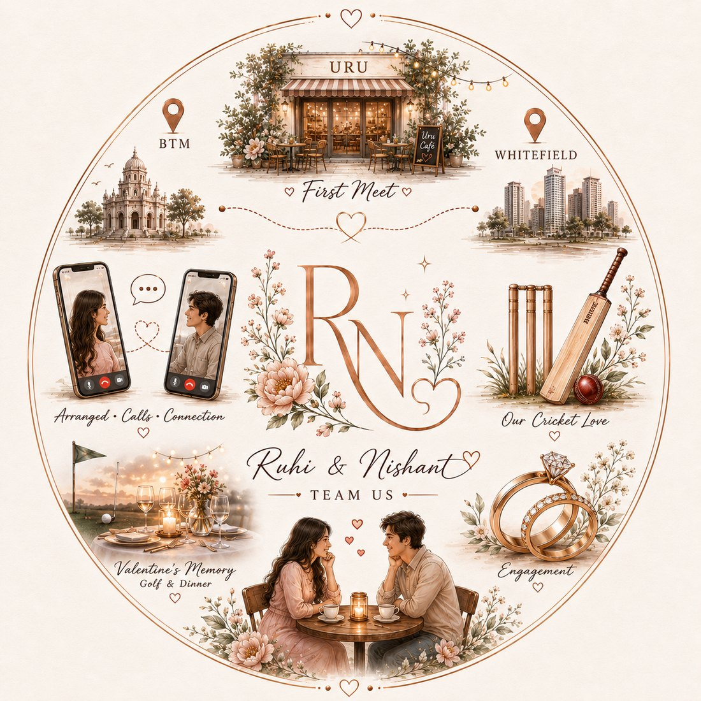
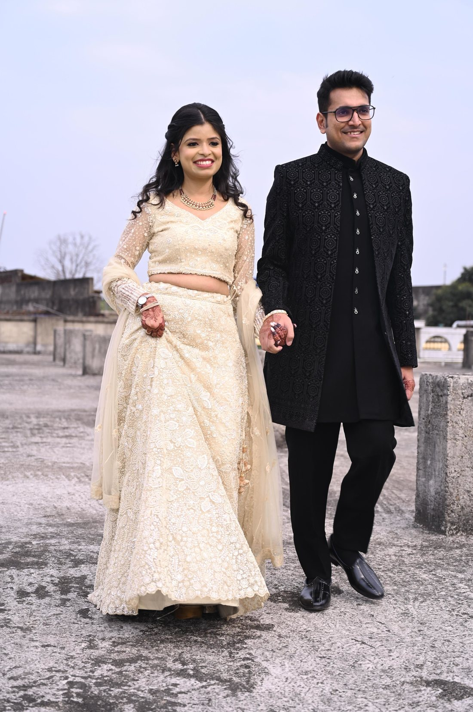
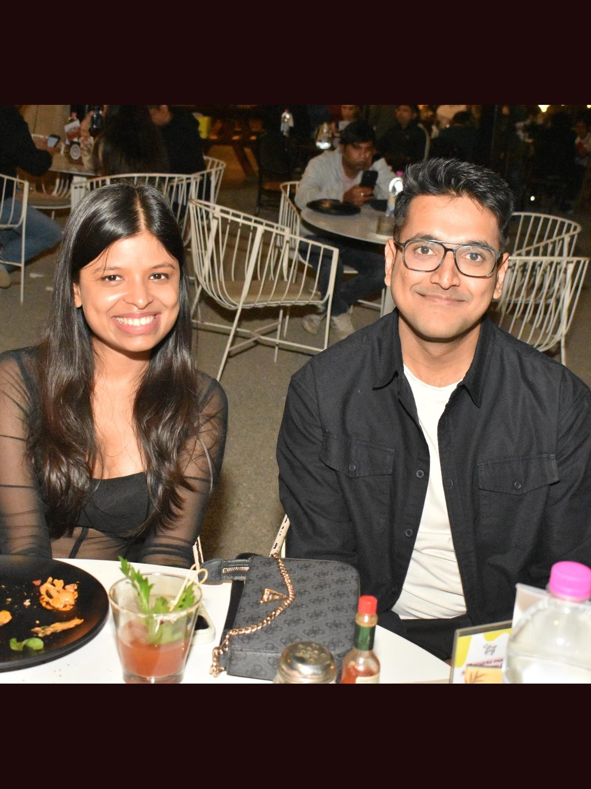
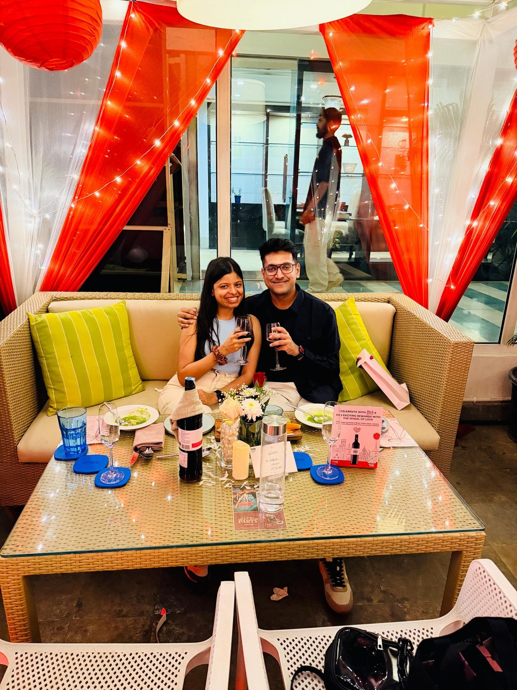

|| ॐ श्री गणेशाय नमः ||
|
With the heavenly blessings of the Almighty and our beloved elders
Welcome to our celebration
you to join us in the wedding celebrations of
We request the honour of your gracious presence and blessings on the following events
Tuesday & Wednesday
1 & 2 December
2026
Scratch to Reveal
A tale of two days, and a lifetime
ALL EVENTS AT SHASHWAT RESORTNoon Onwards
The maternal uncle blesses the bride with gifts and jewellery — a heartfelt tradition of love from her mother's side.
Evening Onwards
An evening of music, dance and joy as both families come together to celebrate the union with song and colour.
Morning Onwards
A joyful morning ritual where turmeric paste is applied to the couple — for radiance, purity, and auspicious blessings.
Evening Onwards
The sacred wedding ceremony — vows exchanged around the holy fire, binding two souls for seven lifetimes.
Getting to Shashwat Resort
BY AIR
Nearest airport: Kazi Nazrul Islam Airport, Durgapur (RDP) — approx. 55 km. Ranchi & Kolkata airports are also well connected.
BY TRAIN
Nearest station: Dhanbad Junction (DHN) — approx. 25 km. Well connected to Kolkata, Delhi, Mumbai and major cities.
ACCOMMODATION
Comfortable stay arranged for outstation guests at the resort and nearby hotels. Kindly RSVP so we can plan accordingly.
Two hearts, one journey

Two strangers, one little twist of fate, a few “let’s see where this goes” conversations… and somehow, we ended up here — planning a whole wedding. Guess it went pretty well! 🥹😂❤️
So, who are these two?
One talks a little too much, the other pretends to listen… and somehow, they both decided forever sounded like a great idea. 😂❤️



Together Forever
Kindly let us know if you can make it
Thank you for your response!
We look forward to celebrating with you.